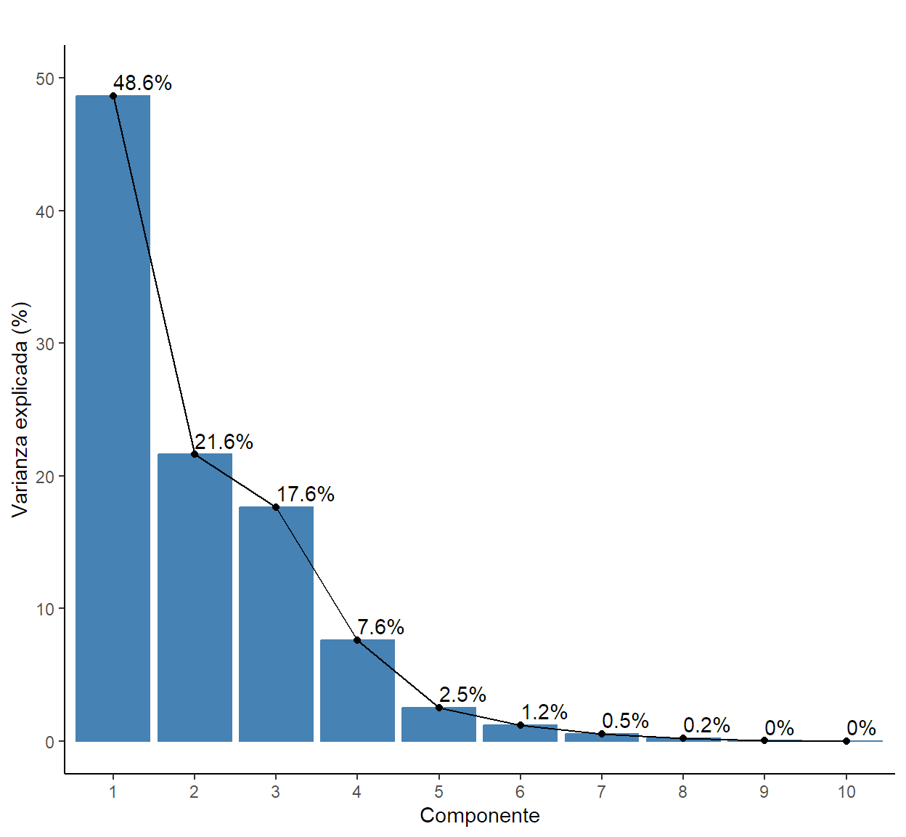
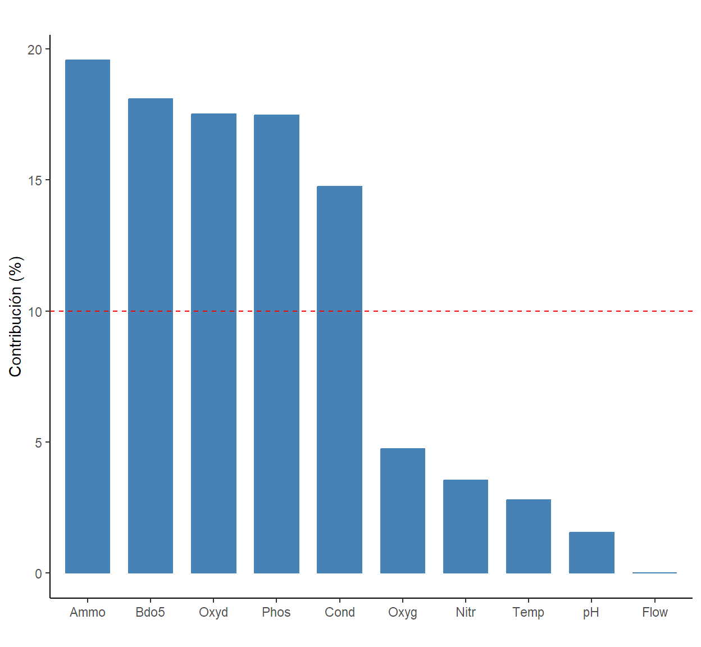
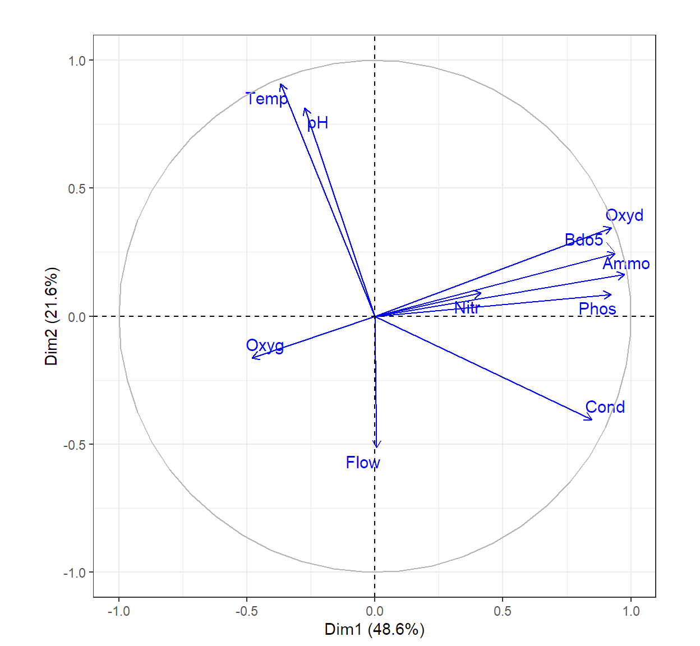
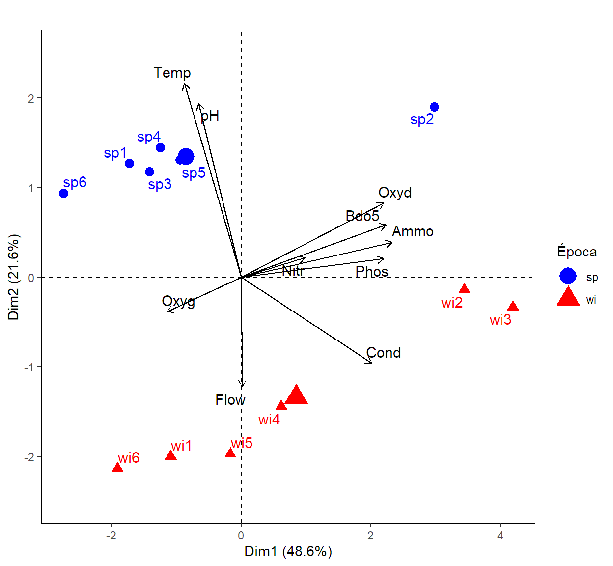

Code
library(readxl)
library(MVN)
library(psych)
library(FactoMineR)
library(factoextra)
library(kableExtra)
library(tidyverse)¿Qué es?
Es una técnica multivariada de ordenación de interdependencia con enfoque descriptivo. La para interdepencia hace referencia a que en la matriz ninguna de las variables utilizadas figura como dependiente principal de las otras. En este análisis las componentes principales son nuevas variables creadas a partir de un conjunto de variables originales como combinaciones lineales de las mismas.
La estructuración de la técnica se debe a Hotelling (1933), aunque sus orígenes se encuentran en los ajustes ortogonales por mínimos cuadrados introducidos por K. Pearson (1901).
¿Cuáles son los objetivos del análisis?
¿Qué se requiere para aplicar el análisis a una matriz de datos básica?
Para poder aplicar el análisis de importante que:
¿Por qué es importante esta técnica en los contextos biólogicos?
Los conjuntos de datos biológicos suelen tener un gran número de variables. Los componentes principales permiten reducir la dimensionalidad sin perder mucha información, facilitando la identificación de patrones y relaciones subyacentes entre las variables que podrían ser difíciles de ver en el conjunto de datos original, visualización de la información y el análisis posterior con otras técnicas.
Matriz de datos básica de la Guía: Ephemeroptera_In_R Contiene la información sobre la abundancia de 11 especies del orden Ephemeroptera y 10 variables ambientales en 6 sitios de muestreo en dos estaciones sp (primavera), wi (invierno).
Matriz de datos básica para la clase:
Alpes_Sp_Rasgos: Las matrices en el archivo de Excel hacen parte del trabajo realizado por Choler en el 2005 y retomado por Dray et al en el 2014, donde el área de estudio comprendió 75 sitios de muestreo repartidos en dos hectáreas entre 2700 m y 2750 m de elevación sobre el suroeste de los Alpes europeo (Lieu ‐ dit Aravo, Commune de Valloire, Francia; 45.067 ° N, 6.394 ° E). La información que se presenta corresponde a 8 rasgos funcionales de la composición de plantas vasculares descrita por especie.
Suelos: Las matrices en el archivo de Excel presenta la información corresponde a la descripción de muestras de suelos de tres tipo con base a 9 características fisicoquímicas recolectadas a difrentes profundidades.
Script_Rmd: Sqmd_PCA
Para ejemplificar usaremos la base de datos “Ephemeroptera_In_R” contiene la información sobre la abundancia de 11 especies del orden Ephemeroptera y 10 variables ambientales en 6 sitios de muestreo por dos estaciones sp (primavera), wi (invierno).
Tabla 1.
Descripción de las variables
| Variables | Unidad de medición |
|---|---|
| Eda | N° de individuos de Ephemera danica |
| Bsp | N° de individuos de Baetis sp |
| Brh | N° de individuos de Baetis rhodani |
| Bni | N° de individuos de Baetis niger |
| Bpu | N° de individuos de Baetis pumilus |
| Cen | N° de individuos de Centroptilum sp |
| Ecd | N° de individuos de Ecdyonurus sp |
| Rhi | N° de individuos de Rhithrogenasp |
| Hla | N° de individuos de Habrophlebia lauta |
| Par | N° de individuos de Paraletophlebia |
| Eig | N° de individuos de Ephemerella ignita |
| Temp | Temperatura en °C |
| Flow | Caudal (L/s) |
| pH | pH |
| Cond | Conductividad |
| Oxyd | Oxígeno disuelto (mg/L) |
| BDO5 | Demanda biológica de oxígeno(mg/L) |
| Oxyg | Oxidabilidad |
| Ammo | Niveles de Amonio (mg/L) |
| Nitr | Niveles de Nitratos (mg/L) |
| Phosph | Niveles de Fosfatos (mg/L) |
library(readxl)
library(MVN)
library(psych)
library(FactoMineR)
library(factoextra)
library(kableExtra)
library(tidyverse)Cargaremos los datos en el ambiente de RStudio y luego cambiemos la naturaleza del objeto usando la función "as.data.frame() nombre". Seguidamente le daremos etiquetas a las UE usando la función "row.names()" las cuales se ubican en la columna 1 de la matriz de datos básica bajo el nombre de ID.
A<- read_excel(file.choose())
A<-as.data.frame(A)
row.names(A)<-A$IDBajo el enfoque descriptivo son indispensable los requisitos 1 y 2. Para el dar cumplimiento al requisito 1 abordaremos el análisis con los factores fisicoquímicos de la matriz y así dar respuesta a:
¿Cómo se caracterizan los sitios de muestreo dado los factores fisicoquímicos en las dos estaciones?
Para el requisito 2 exploraremos la matriz de correlación usando el test de esfericidad de Bartlett.
RECUERDE. Siempre que se análiza la matriz de correlación se verifica la normalidad multivariante porque para construirla se definir el coeficiente de correlación apropiado en el argumento "method".
#Normalidad.
mvn(data = A[,15:24],mvnTest = "mardia")$multivariateNormality [1:2,]%>%
kable(format = "html",
caption = "Tabla 1. Verificación de la normalidad multivariante") %>%
kable_classic(full_width = F)| Test | Statistic | p value | Result |
|---|---|---|---|
| Mardia Skewness | 219.872603435604 | 0.489741939396493 | YES |
| Mardia Kurtosis | -2.07677758651762 | 0.0378220918091794 | NO |
cortest.bartlett(R = cor(A[,15:24],method = "spearman"),n = nrow(A)) %>% data.frame() %>%
kable(format = "html",
caption = "Tabla 2. Verificación matriz correlada") %>%
kable_classic(full_width = F)| chisq | p.value | df |
|---|---|---|
| 123.8912 | 0 | 45 |
Es posible garantizar el requisito 2 ya que para los parámetros fisicoquímicos el test de esfericidad de Bartlett reflejo que hay evidencia suficiente de correlaciones significativas entre más de dos pares de variables, 𝜒²(45)=123.89 , p<0.05.
NOTA. Complemente la interpretación con el test de corelaciones para identificar los pares de variables con correlaciones significativas y el correlograma. (Ver Material del tema exploración de datos multivariantes con RStudio).
Dos son las formas más comunes de generar las componentes principales:
En cualquiera de los dos casos para obtener las componentes principales se requiere calcular los valores y vectores propios de tal matriz (Matriz S de varianzas - Covarianzas ó la matriz R de correlación).
Definición de componente.
Cada componente principal denotada con \(W_i\) es una combinación lineal de las variables originales, donde \(a_i\) son el vector propio \(i\) y corresponde al peso de la variable \(x_i\) de la matriz de datos en la componente principal; obteniendose así tantas componentes como p variables tenga nuestra matriz.
Sea la componente \(i\), \[ W_i=X*a_i \]
La función "PCA()" permite obtiener las componentes a partir de la matriz de correlaciones, el argumento "scale.unit" es un argumento lógico que se le puede añadir a la línea de código para indicar la estandarización de las variables cuando estas se encuentras en unidades de medición distintas y el argumento "ncp" es el número de componentes a calcular.
acp=PCA(A[,15:24],graph = FALSE,ncp = 10)
kable(round(acp$svd$V,4), format = "html",
align = "c",
col.names = c("W1","W2","W3","W4","W5","W6","W7","W8","W9","W10"),
caption = "Tabla 3. Coeficiente de las componentes" ) %>%
kable_classic(full_width = F)| W1 | W2 | W3 | W4 | W5 | W6 | W7 | W8 | W9 | W10 |
|---|---|---|---|---|---|---|---|---|---|
| -0.1668 | 0.6172 | -0.0143 | 0.1113 | -0.0441 | -0.2881 | 0.6063 | 0.2171 | -0.0491 | 0.2768 |
| 0.0031 | -0.3500 | 0.3826 | 0.7851 | 0.1205 | 0.0897 | 0.2100 | 0.2095 | 0.0635 | -0.0142 |
| -0.1244 | 0.5536 | 0.3562 | 0.0870 | 0.1196 | 0.2560 | -0.5825 | 0.3507 | 0.0077 | -0.0382 |
| 0.3840 | -0.2746 | 0.0731 | -0.3498 | -0.1221 | 0.0290 | 0.0711 | 0.7490 | -0.1089 | 0.2363 |
| -0.2176 | -0.1106 | 0.5369 | -0.4646 | 0.5129 | 0.0535 | 0.2722 | -0.1007 | 0.2937 | 0.0025 |
| 0.4254 | 0.1668 | 0.0590 | 0.0091 | 0.2837 | 0.4936 | 0.2057 | -0.2665 | -0.5837 | 0.0976 |
| 0.4186 | 0.2351 | -0.1055 | -0.0072 | -0.0334 | 0.1725 | 0.2597 | 0.1192 | 0.4130 | -0.6894 |
| 0.4424 | 0.1107 | -0.0646 | 0.1147 | 0.0611 | 0.0698 | -0.1264 | -0.2102 | 0.5895 | 0.5987 |
| 0.1878 | 0.0619 | 0.6278 | -0.0915 | -0.6787 | -0.0982 | 0.0335 | -0.2887 | -0.0566 | -0.0229 |
| 0.4181 | 0.0581 | 0.1417 | 0.0617 | 0.3812 | -0.7428 | -0.2074 | -0.0471 | -0.1828 | -0.1488 |
La varianza de cada componente es capaz de recoger es equivale a su valor propio: \[ V(W_i)=\lambda_i \] calculándose la varianza acumulada:
\[ V=\sum_{i=1}^{m} \lambda_i/\sum_{i=1}^{p} V(W_i) \]
kable(get_eigenvalue(acp), format = "html",
align = "c",digits = 2,
col.names = c("Valor propio", "Varianza explicada (%)", "Varianza explicada acumulada (%)"),
caption = "Tabla 4. Porporción de varianza explicada por las componentes") %>%
kable_classic(full_width = F)| Valor propio | Varianza explicada (%) | Varianza explicada acumulada (%) | |
|---|---|---|---|
| Dim.1 | 4.86 | 48.63 | 48.63 |
| Dim.2 | 2.16 | 21.62 | 70.25 |
| Dim.3 | 1.76 | 17.63 | 87.88 |
| Dim.4 | 0.76 | 7.61 | 95.49 |
| Dim.5 | 0.25 | 2.51 | 98.01 |
| Dim.6 | 0.12 | 1.18 | 99.19 |
| Dim.7 | 0.05 | 0.55 | 99.74 |
| Dim.8 | 0.02 | 0.23 | 99.97 |
| Dim.9 | 0.00 | 0.02 | 99.99 |
| Dim.10 | 0.00 | 0.01 | 100.00 |
NOTA. Las componentes que tiene poder explicativo son aquellas que arojan un \(\lambda_i>1\).
INTERPRETACIÓN. Tenemos que las tres primeras componentes son las que tienen poder explicativo para caracterizar de acuerdo a los factores fisicoquimicos los sitios de muestro por época, donde las dos primeras componentes, \(\lambda_1=4.863 \wedge \lambda_2=4.863\)$ logra recoger más de la mitad de la variabilidad (70.25%).
Se pueden seleccionar el número de componentes óptimos utilizando la proporción de varianza acumulada explicada, en donde para datos colectados en laboratorio, se pueden aceptar que el análisis recoja al menos el 95% de la variabilidad total, y para datos recolectadps en campo al menos el 70% de la variación total.
También se puede realizar un gráfico de sedimentación para determinar a partir de que componente principal se produce un cambio en la pendenciente de la proporción de la varianza explicada.
fviz_screeplot(acp,addlabels=TRUE)+
theme_classic()+
ylim(c(0,50))+
labs(title = "",y="Varianza explicada (%)",x="Componente")
NOTA. Se deben seleccionar mínimo dos componentes.
Vamos a visualizar la contribución de las variables con la función "fviz_contrib()" donde el argumento "axes" indica para que componente estamos visualizando la contribución. Si se quiere identificar las variables correlacionadas significativamente con la componente principal se emplea la función "dimdesc()".
NOTA. Variables con porcentaje de contribución de al menos 10% son aquellas que pueden explicar mejor la variabilidad recogida por esa componente y definirla al guardan una correlación lineal significativa con ella.
Como ejemplo extraeremos las contribuciones y correlaciones para la componente 1.
#Formato gráfico
G1<-fviz_contrib(acp, choice = "var", axes = 1)
G1+theme_classic()+ labs(title = "",y="Contribución (%)",x="")
#Formato tabla
kable(G1$data, format = "pipe",digits = 4, align = "c",row.names = F,
col.names = c("variable","Contribución (%)"),
caption = "Tabla 5. Contribución de las variables a la primera componente") %>%
kable_classic(full_width = F)| variable | Contribución (%) |
|---|---|
| Temp | 2.7806 |
| Flow | 0.0009 |
| pH | 1.5481 |
| Cond | 14.7456 |
| Oxyg | 4.7341 |
| Bdo5 | 18.0932 |
| Oxyd | 17.5245 |
| Ammo | 19.5681 |
| Nitr | 3.5271 |
| Phos | 17.4779 |
Corr<-dimdesc(acp, axes = c(1,2))
kable(Corr$Dim.1$quanti, format = "html",align = "c",digits = 4,
col.names = c("Correlación", "p-Value"),
caption = "Tabla 6. Correlaciones de las variables con la primera componente") %>%
kable_classic(full_width = F)| Correlación | p-Value | |
|---|---|---|
| Ammo | 0.9755 | 0e+00 |
| Bdo5 | 0.9381 | 0e+00 |
| Oxyd | 0.9232 | 0e+00 |
| Phos | 0.9220 | 0e+00 |
| Cond | 0.8468 | 5e-04 |
Las variables que están aportando a la construcción de la componente 1 son los niveles de amonio (19.57%), demanda biológica de oxígeno (18.09%), oxígeno disuelto (17.52%), los niveles de fosfatos (17.48%) y la conductividad (14.74%). Todas ellas guardan una relación lineal significativamente fuerte directa con la componente 1.
NOTA. Reporte el coeficiente de correlación lineal. Ej. Amonio (r=0.97, p<0.05).
El circulo de correlaciones o gráficas de correlación variable. Muestra las relaciones lineales entre todas las variables con las componentes dos seleccionadas. Este gráfico se puede interpretar considerando lo siguiente:
fviz_pca_var(acp,repel = TRUE,col.var = "blue")+
theme_bw()+labs(title = "")
Son gráficos útiles para visualizar tanto las UE como las variables.
Tenga en cuenta que: 1. el biplot solo puede ser útil cuando hay un número bajo de variables e individuos en el conjunto de datos. 2. las coordenadas de los individuos y las variables no se construyen en el mismo espacio multidimensional, por lo que al interpretar el biplot debe centrarse principalmente en la dirección de las variables, pero no en sus posiciones absolutas en el gráfico.
fviz_pca_biplot(acp, geom.ind = c("point","text"),repel = T,
geom.var = c("arrow","text"),col.var = "black",
col.ind = A$Season,
title = "",pointsize = 3)+
theme_classic()+ylim(c(-2.5,2.5))+
scale_color_manual(name = "Época",values = c("blue","red"))+
scale_shape_manual(name = "Época",values = c(16,17))
Gráfico en tres dimensiones.
library(rgl)
componentes<-data.frame(PC1=acp$ind$coord[,1],
PC2=acp$ind$coord[,2],
PC3=acp$ind$coord[,3],
Season=as.factor(A$Season))
plot3d(componentes[,1:3], col=c("green","red")[componentes$Season],size = 10)
text3d(acp$var$coord[,1:3], texts=rownames(acp$var$coord[,1:3]), col="blue")
coords <- NULL
for (i in 1:nrow(acp$var$coord)) {
coords <- rbind(coords, rbind(c(0,0,0,0,0,0,0,0,0,0),acp$var$coord[i,1:3]))
}
lines3d(coords, col="blue", lwd=3)Replique a manera de práctica el análisis de componentes principales usando la matriz de datos básica Miroalgas para responder a: